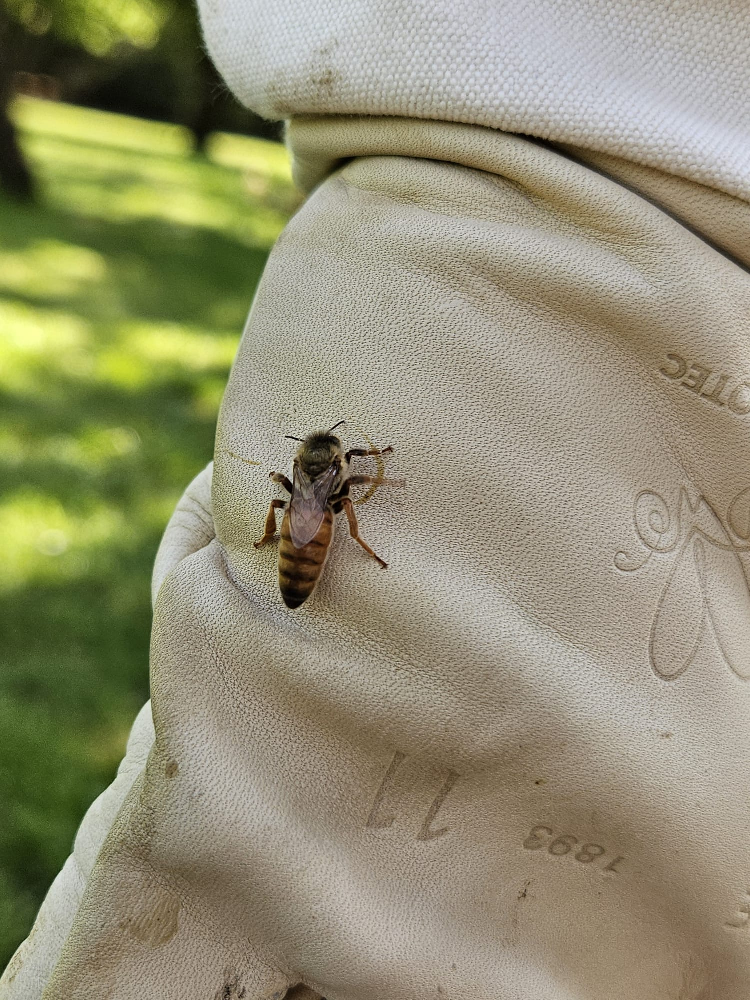
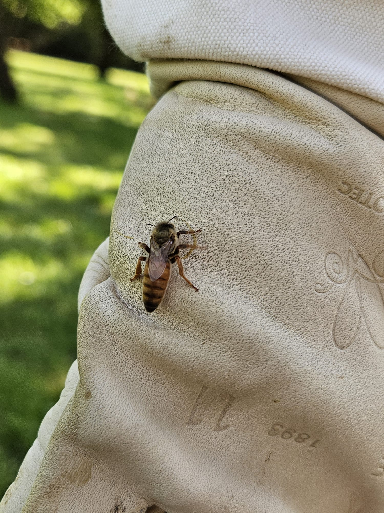
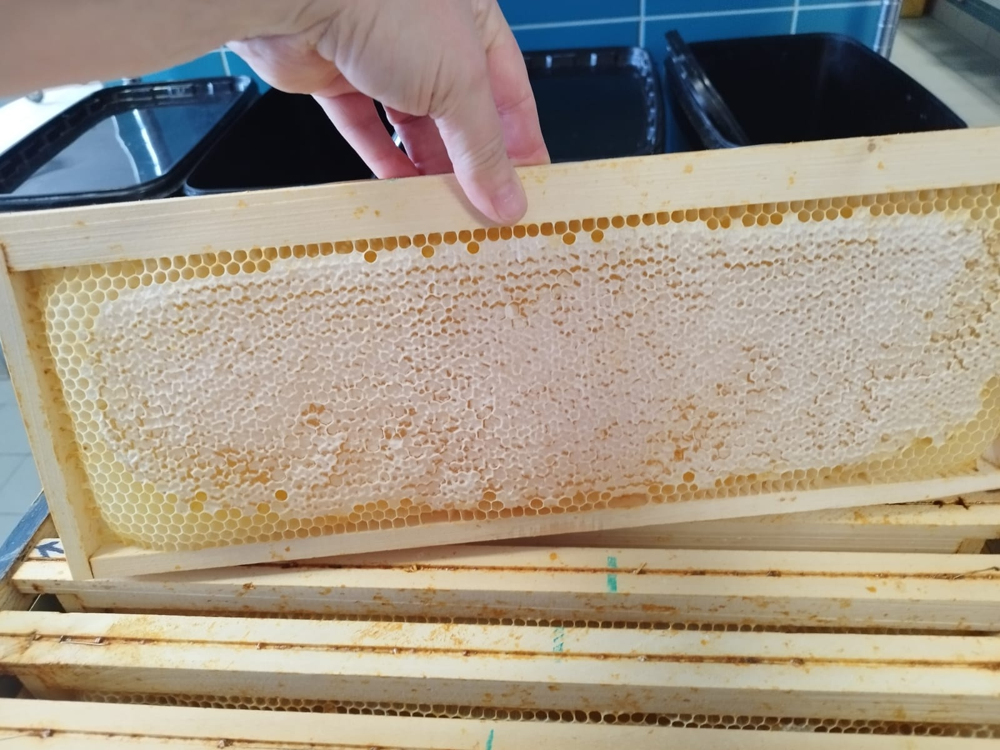
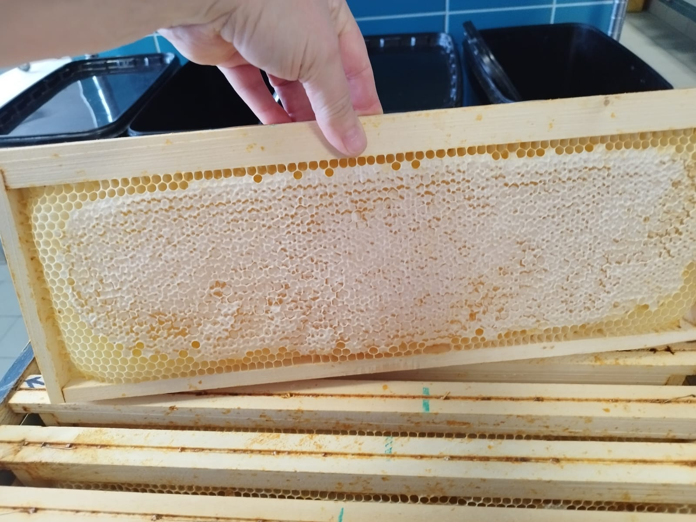

 



Bienvenue sur le site de La Ruche Gourmande
Des miels locaux, naturels et artisanaux, issus d’abeilles heureuses et d’un territoire préservé.
Notre rucher est situé au cœur du Pays Haut à proximité des communes de Villerupt, Crusnes, Errouville, Audun-le-Tiche. Nos abeilles butinent dans les champs, vergers et prairies pour produire des miels authentiques et savoureux. Chaque pot raconte l’histoire de notre territoire et de notre engagement pour l’environnement.
Nos engagements pour la biodiversité
Nous sommes un petit rucher local et artisanal, respectueux des abeilles et de la nature. Notre démarche est simple : partager notre passion avec ceux qui aiment la biodiversité, soutenir l’apiculture à taille humaine et préserver notre environnement.
- üéì Projets √©ducatifs pour enfants et lyc√©es h√¥teliers : transmettre la passion des abeilles et sensibiliser √† la biodiversit√©.
- üêù Parrainage de ruches et suivi personnalis√© de leur √©volution.
- üå± Pr√©servation de la biodiversit√© locale gr√¢ce √† des pratiques douces et artisanales.
Commandez du miel ou parrainez une ruche
Rejoignez notre aventure et soutenez l’apiculture locale :
Le parrainage d’une ruche vous permet de soutenir directement nos abeilles et notre travail. En échange, vous recevez régulièrement des nouvelles de votre ruche, des photos, et une partie du miel récolté. C’est une belle manière de contribuer à la protection des pollinisateurs et de la biodiversité, tout en partageant une expérience unique et gourmande.